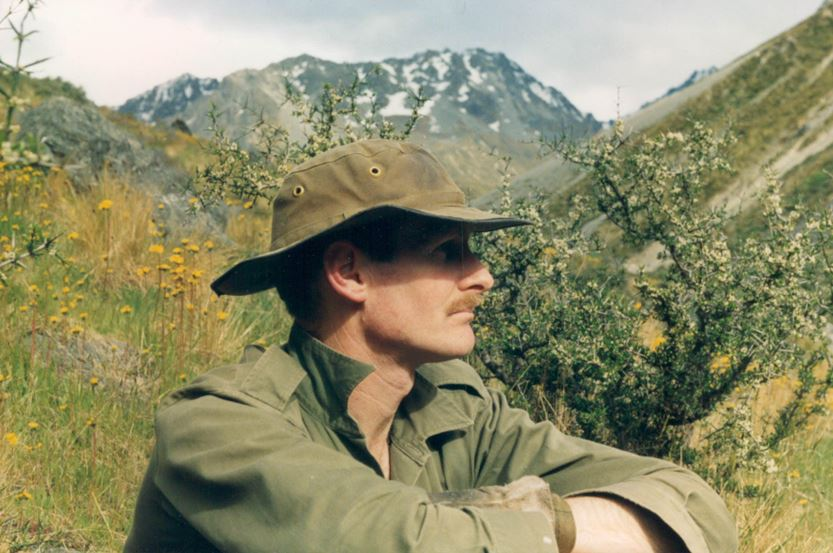

An outdoor range offering 25, 50, and 100 metre shooting distances — open to members and visitors most Saturdays.
| Category | Fee |
|---|---|
| NZDA Members | $5.00 |
| Non-members | $10.00 |
Current membership card required for member rate.
1948 – 2025
Dr Chaz Forsyth — NZDA Life Member, COLFO executive member, teacher, researcher, hunter, and tireless advocate for the responsible ownership of firearms in New Zealand — passed away on 20 January 2025, aged 76. He had been quietly managing illness through the preceding year, in his characteristic fashion: business as usual, still attending meetings, still sharing his knowledge.
Born in North Otago in 1948, Chaz began his career as a civil engineer before retraining as a workshop teacher at Balmacewen Intermediate, a role he held for twenty years. In retirement he returned to the University of Otago full-time — completing qualifications in economics, physical geography, firearms, and range consultancy — and in 2023 earned a PhD in human geography, with a thesis on firearms in the New Zealand community. He accepted the achievement with characteristic humility and a cheeky grin: he was, he told people, now a "Doctor Bastard."
A prolific writer of well-balanced submissions and a source of what those around him called infinite knowledge, Chaz gave decades to the NZDA and COLFO — as a researcher, range consultant, and firearms safety instructor who trained hundreds of new licence applicants at the Dunedin police station across many years of voluntary evenings. Former NZDA president Bill O'Leary, who knew him for more than forty years, remembered a man with a "brilliant mind" whose analysis of firearm incidents was invaluable, and whose interest in range design — rooted in his original drafting trade — shaped clubs like ours in lasting ways.
His guidance and advice were invaluable, and his stories — rich with what those close to him called wise wisdom on hunting and politics — were shared generously with members of all ages and experience. His final message, delivered through his daughter Bridget in his last days, was three words: "Keep smiling." A keen mountaineer, avid hunter, and devoted friend to this club — the range that carries his name is the right tribute for a man who gave so much to it.

Every Saturday session listed below. Green = open, red = closed. Updated automatically from the range schedule — always confirm on the Facebook group for same-day weather closures.
Members pay half the range fee. Join the Otago Branch and save on every visit.
Join the Otago Branch →